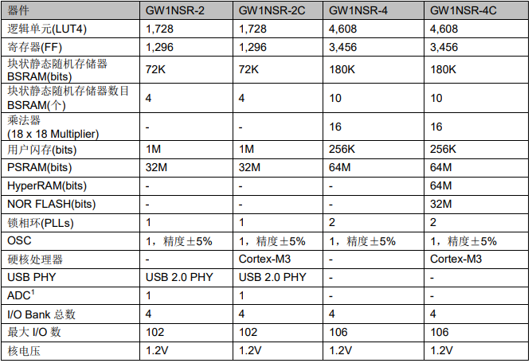

GW1NSR¶
GitHub : Gowin LittleBee FPGA 4608LUT4 SIP Cortex-M3 USB2.0PHY
Xin简介¶
高云半导体 GW1NSR 系列 FPGA 产品是高云半导体小蜜蜂(LittleBee)家族第一代 FPGA 产品，是一款SIP芯片(55nm)，片上集成GW1NS系列FPGA和PSRAM存储芯片。
规格参数¶
基本参数¶
发布时间：
发布价格：
制程工艺：55 nm
供货周期：
处理性能：? CoreMark
RAM容量：180Kbit
Flash容量：256Kbit
特征参数¶
4608 LUT4、3456 FF
Cortex-M3 硬核处理器
8ch 12bit SAR ADC (1MSPS)
USB2.0 PHY（480Mbps）
支持 I3C/MIPI 接口
供电电压：1.2V(LV)、2.5V/3.3V(UV)
时钟精度：片内晶振±5%
芯片架构¶
GW1NSR-2C 和 GW1NSR-4C是SoC芯片，以ARM Cortex-M3 硬核处理器为核心，具备了实现系统功能所需要的最小内存。
GW1NSR-2C最高支持 30MHz 的工作频率，GW1NSR-4C 最高支持 80MHz 的工作频率。
GW1NSR-2C器件的 NVIC 提供了两个外部用户中断，GW1NSR-4C器件支持六个外部用户中断。每个中断支持 8 种可编程的优先级（0~7），7 表示最低级的优先级，0 表示最高级的优先级
GW1NSR-2C¶
GW1NSR-2C 内嵌 USB2.0 PHY 和 ADC

GW1NSR-4C¶
Warning
UART0和UART1通过APB1总线进行控制和访问，最大波特率921.6Kbits/s，支持8位数据位和1位停止位，不支持校验位。
Xin选择¶
相比 MCU，FPGA 在可编程性、IO 配置灵活性、实时处理能力等方面都有无可比拟的优势，MCU能做的事情FPGA基本上都做到，FPGA还能做许多MCU做不到的事情。随着芯片规模越来越大，成本逐渐降低，低端FPGA已逐步取代了传统的数字元件。
品牌对比¶
Gowin 是全球增长最快的可编程逻辑公司，作为中国的FPGA厂商，相对传统的国际巨头，在低阶产品上具有很高的性价比。
Lattice iCE40¶
使用开源工具链fpga-toolchain，可以基于 PlatformIO 开发，开源工具链有以下几个优点：
开源工具链的中所有组件均有源代码提供，可以自行编译或者使用已经构建好的二进制文件，不需要厂商许可证。
体积小，包含了 Lattice iCE40 系列、ECP5 系列 FPGA 支持的工具链压缩包大小在 100 MB 左右。
速度快，节省上板调试时间，以几个小工程为例完成代码综合、布局布线并下载到 FPGA 中仅需几秒钟的时间。
跨平台支持，开源工具链不仅支持 Windows，Linux 和 Mac OS 等操作系统，而且支持 x86 之外的处理器平台。
型号对比¶

GW2A系列(晨熙)¶

高云可提供基于GW2A系列FPGA的RISC-V软核IP，包含一个32-bit的RISC-V微处理器和系统外设

GW1NRF¶
GW1NRF系列蓝牙FPGA产品是一款系统级封装芯片，以 32位硬核微处理器为核心，支持蓝牙5.0低功耗射频功能，具有丰富的逻辑单元、内嵌B-SRAM 和 DSP 资源，IO 资源丰富，系统内部有电源管理模块和安全加密模块。
内嵌32bits低功耗ARC EM4处理器 (QFN48)
BLE 5.0
136kB ROM
128kB OTP for power efficiency ：128KB OTP
48kB IRAM and 28kB DRAM
AES-128硬核加密、ECC-P256密钥生成器
Hint
GW1NRF系列同 GW1NSR 在FPGA性能上规格相同，主要差异在SIP封装的硬核资源。
版本对比¶
配置参数¶

封装参数¶

Xin应用¶
硬件资源¶
Tang Nano 4K¶
Tang Nano 4K FPGA 板是Tang Nano FPGA板的一个升级，采用了更强大的 GOWIN GW1NSR-LV4C FPGA，它配备的是 4608 LUT（不再是之前的1152）和嵌入到芯片中的 Cortex-M3 微控制器。

Tang Nano对比¶

工具资源¶
Gowin IDE¶

Gowin IDE的License目前是免费向客户提供的，使用期限为自取得代码之日起一年，过期失效后可以再次申请License分配是和本机Mac地址挂钩的，一套软件只能在一台电脑上运行。如需多台电脑运行，可申请多个License。
框架资源¶
GoAI开发套件¶

GoAI 2.0是一个通过在高云FPGA器件上部署卷积神经网络(CNNs)的机器学习开发平台。它包含用于转换TensorFlow文件和加速器FPGA IP的软件脚本，以运行训练好的机器学习模型以及教程和示例。
GoAI 2.0集成到TensorFlow和TensorFlow Lite框架中，比起遗留平台及其他可替代平台更加方便使用。
基于TensorFlow的广泛软件开发环境，GoAI 2.0通过生成所需的所有固件，将机器学习模型直接部署到高云FPGA中，不需编写任何额外的RTL或C代码。完全支持Windows和Linux系统，包括Ubuntu。
依赖的开发资源：
ARM Keil v5
Gowin IDE or Gowin Programmer